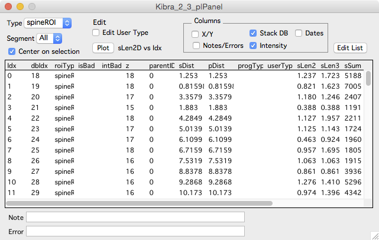

Point List

The point list panel displays a list of points for one stack.
To open a point list panel
- Right-click a stack and select the menu ‘Windows … Point List’.
- In a stack window, use the ‘Point List’ button in the left-panel. Open the left-panel with keyboard ‘[’.
Interface
Select individual points in the list and the selection will propagate to open stack windows, stack plots and map plot windows. Use the center on selection checkbox to automatically snap selected objects in their stack windw.
Keyboard ‘b’ will toggle the selected object between bad and good.
When a point is selected, its text note will be displayed at the bottom of the window. The note can then be edited.
Edit User Type
Turn on the ‘Edit User Type’ checkbox and the point list window will respond to the following keystrokes to set the value of ‘userType’:
| Index | Key | Result |
|---|---|---|
| 0 | u | Unknown |
| 1 | m | Mushroom |
| 2 | f | Filapodia |
| 3 | l | Long |
| 4 | s | Stubby |
| Del | -clear the entry- |
Counts for each of these user types are included for each segment in each segment report.
Edit User 1/2/3
Turn on the ‘Edit User 1/2/3’ checkbox and the point list window will respond to the following keystrokes:
| Key | Sets | Meaning |
|---|---|---|
| 6 | user1 | Match |
| 7 | user2 | No Match |
| 8 | user3 | Partial Match |
| 9 | userBool1 | Inverse Match |
| 0 | -clear all entries- | Clear |
Counts for each of these user types are included for each stack in each stack report.
Plotting
Right-click a column header and select Quick Plot to plot that stat versus the sequential number of each spine. The sequential number of each spine is the order they were created in, it is not the order along the dendrite.
Any two columns can be plotted as X and Y. Right click a column and select Set X Stat, then right-click another column and select Set Y Stat. Then use the main Plot button to plot X versus Y.
For example, to plot ‘spine length 3d’ versus ‘background subtracted spine sum’.
- Right-click on ‘sLen3d’ column and select ‘Set Y Stat’
- Right-click on ‘ubssSum’ column and select ‘Set X Stat’
- Click the main ‘Plot’ button.
Columns
To make the table easier to read, columns can be turned on and off with the check-boxes in the Columns group.
Clicking on a column header will sort the table by that column. Shit+click the column header to reverse sort. Right click a column header to plot the values in the column.
The error column will display errors encountered while running intensity analysis.
Here is a partial list of the meaning of each column. See intensity for a list of the meaning of additional columns.
| Column | Meaning |
|---|---|
| Idx | The row in the table |
| dbIdx | The row in the stack db |
| roiType | The type of the point (spineROI, controlPnt, otherROI) |
| isBad | A ‘1’ if the point is marked bad. Toggle this with keyboard ‘b’ |
| intBad | A ‘1’ if the point ismarked intensity bad |
| z | The z-image plane the point is in |
| parentID | The segment number a point (spine) belongs to |
| nnDist | Distance (um) to the nearest spine. |
| dDist | The distance (um) along the segment the point (spine) is attached to. |
| pDist | Only for maps, the distance (plus or minus) away from the pivot point |